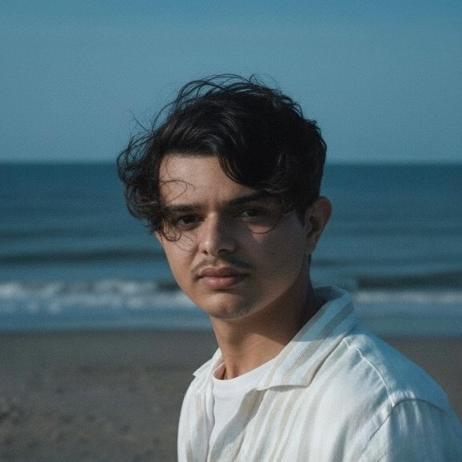

Avishek, visual storyteller, cinematographer, colorist and web developer
Capturing moments and crafting digital experiences through a cinematic lens.
Selected work
Cinematography, color grading and edits. Each project opens as a video on Google Drive.
About
A BBA student working where technology, business and storytelling overlap.
Outside class I spend my time on cinematography and color grading, turning raw footage into something cinematic.
Recently I've started building for the web. This portfolio is where I practice.
- Cinematography Shooting
- Color grading Post-production
- Web development Learning in public
Let's work together.
Have a project in mind or want to collaborate on something cinematic? Send me a message.